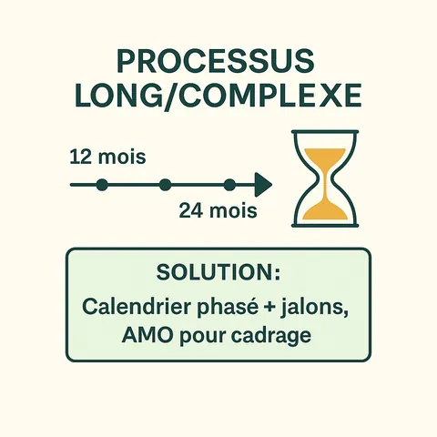
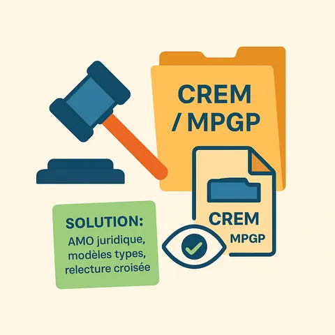
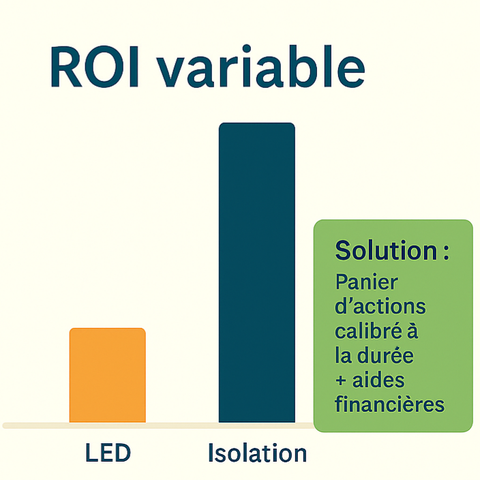
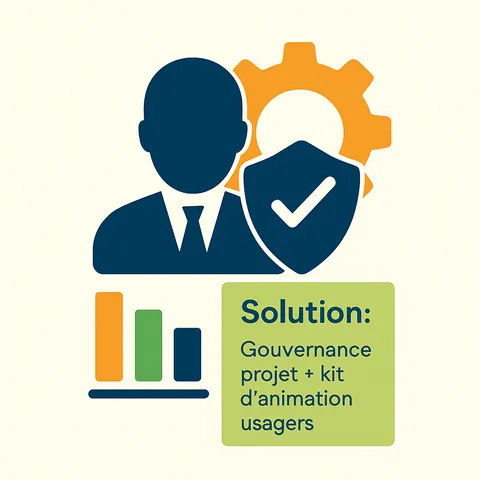

Avantages et limites du CPE
Les principaux avantages du CPE
Le Contrat de Performance Énergétique s’impose comme l’un des leviers les plus puissants pour accélérer la transition énergétique, en particulier dans les bâtiments publics et tertiaires. Voici les bénéfices les plus notables :
-
Une garantie contractuelle sur les résultats
Le CPE repose sur un engagement de performance mesurable. Cela signifie que :
- le prestataire s’engage sur un seuil d’économie d’énergie garanti
- le client est indemnisé en cas de non-atteinte
- les résultats sont suivis, mesurés et vérifiés
🎯 Impact : on passe d’une logique de moyens (travaux à réaliser) à une logique de résultats (efficacité prouvée).
-
Une meilleure maîtrise des dépenses énergétiques
Grâce au CPE, la consommation énergétique devient :
- prévisible (via le calcul de la ligne de base)
- réduite (par les actions menées)
- optimisée dans la durée (avec un suivi continu)
📉 Impact : les factures diminuent de 20 à 50 % selon le projet, avec une stabilité financière à long terme.
-
Un outil structurant pour rénover globalement
Le CPE pousse à adopter une approche globale plutôt que ponctuelle :
- regroupement des bâtiments
- traitement de plusieurs usages (chauffage, éclairage, ventilation…)
- intégration de l’exploitation et de la maintenance
📦 Impact : les actions sont cohérentes, durables et performantes.
-
Un levier de financement efficace
Avec le bon montage, un CPE permet de :
- financer les travauxs via les économies réalisées
- intégrer un tiers-investisseur (si besoin)
- mobiliser des aides financières (CEE, DETR, aides régionales…)
📌 Impact : le CPE est souvent autofinancé ou faiblement impactant pour le budget de la collectivité ou de l’entreprise.
-
Un changement durable des pratiques
Le CPE repose aussi sur :
- l’implication des usagers
- des formations à l’usage et au pilotage
- une transparence des consommations
👥 Impact : le changement est durable, car il modifie les comportements au-delà des seules solutions techniques.
Les limites à connaître avant de s’engager
Même s’il est performant, le CPE n’est pas sans contraintes ni risques. Voici les principales limites à anticiper :
-
Un processus parfois long et complexe
Le montage d’un CPE nécessite :
- des études préalables approfondies
- une contractualisation rigoureuse
- un suivi exigeant
⏳ Conséquence : un projet CPE peut prendre 12 à 24 mois avant son lancement effectif.
 -

Un formalisme juridique lourd (surtout en marché public)
Pour les collectivités :
- le choix du type de marché (MPGP, CREM…) est stratégique
- les clauses doivent respecter le Code de la commande publique
- l’appel d’offres doit être parfaitement cadré
📋 Risque : une erreur contractuelle peut remettre en cause la performance ou la recevabilité du marché.
-
Une dépendance à la qualité de la ligne de base
Une ligne de base mal définie (données incomplètes, absence de normalisation météo, changements d’usage non anticipés) peut :
- rendre la comparaison biaisée
- générer des litiges
- pénaliser la juste rémunération du prestataire
🔍 Solution : faire appel à un AMO ou un expert M&V indépendant.
-

Un retour sur investissement variable
Selon la nature du patrimoine :
- les gains peuvent être rapides (relamping, régulation)
- ou longs à obtenir (isolation lourde, rénovation globale)
📈 Enjeu : calibrer les actions en fonction de la durée du contrat, des financements disponibles et du niveau d’économie attendu.
-
Nécessite une implication forte du maître d’ouvrage
Le succès du CPE repose aussi sur :
- la qualité du pilotage interne
- l’adhésion des usagers
- la stabilité de l’exploitation (pas de modifications majeures non prévues)
📌 Risque : un manque d’implication peut compromettre la performance globale.

En résumé : avantages vs limites
Avantages
- Résultats garantis
- Réduction durable des consommations
- Financement possible par les économies
- Vision long terme et pilotage énergétique
- Implication des usagers et changement durable
Limites
- Montage long et technique
- Complexité juridique (surtout public)
- Importance critique de la ligne de base
- Nécessite du temps et des compétences internes
- ROI variable selon les actions
Le CPE : un outil puissant mais exigeant
Le CPE est l’outil le plus robuste pour structurer une politique de rénovation énergétique performante et mesurable. Mais il ne s’improvise pas. Il exige :
- une préparation méthodique
- un choix du bon modèle contractuel
- une vigilance sur les étapes-clés
- et une vraie collaboration entre tous les acteurs